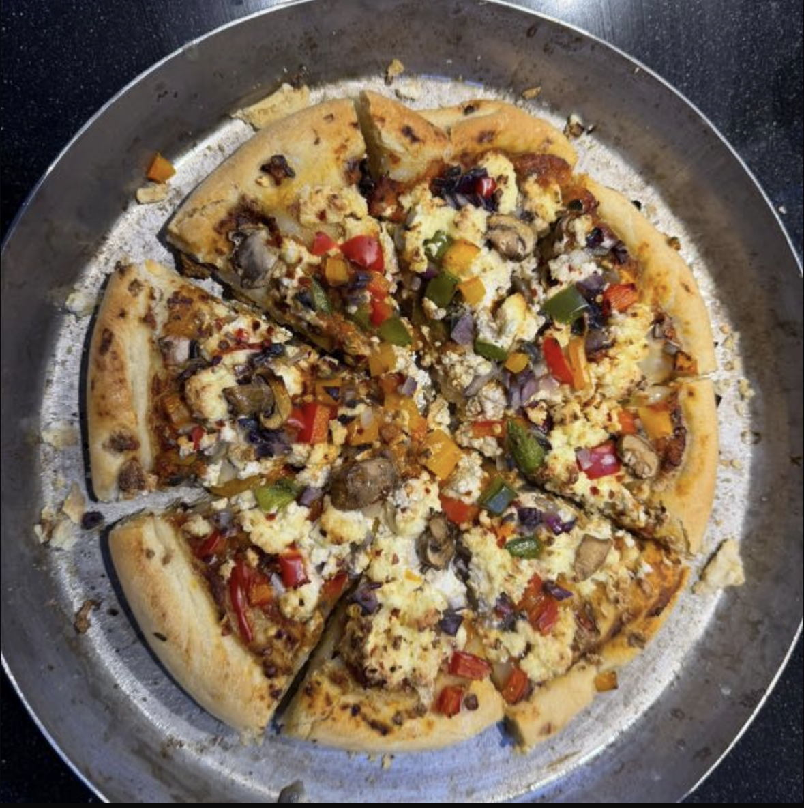

Pizza
Home

Description
Hey! Today we are learning how to make a Sarbloh Bibek friendly pizza. This recipe is inspired by the Gurmat Bibek YouTube Channel.
Ingredients
- Fresh Paneer (Sarbloh Bibeki prepared)
- Homemade Pizza Sauce (no onion/garlic if following strict bibek)
- Whole Wheat Pizza Base or Hand-rolled Dough
- Fresh Tomatoes (finely sliced)
- Green Capsicum (bell pepper)
- Sweet Corn (optional)
- Black Pepper
- Rock Salt / Sendha Namak
- Olive Oil or Mustard Oil (light drizzle)
- Fresh Coriander (for garnish)
Steps
- Prepare the dough using whole wheat flour, water, salt, and a little oil. Knead well and let it rest for 1–2 hours.
- Roll out the dough into a pizza base of desired thickness.
- Prepare the pizza sauce (tomato-based, without onion or garlic if following strict Sarbloh Bibek).
- Spread a thin layer of sauce evenly over the base.
- Add sliced fresh paneer as the main topping.
- Add vegetables like capsicum, tomatoes, and corn evenly.
- Sprinkle rock salt and black pepper to taste.
- Drizzle a small amount of oil over the toppings.
- Preheat the oven to 200°C and bake the pizza for 12–15 minutes until the crust is golden.
- Remove from oven, garnish with fresh coriander, slice, and serve hot.